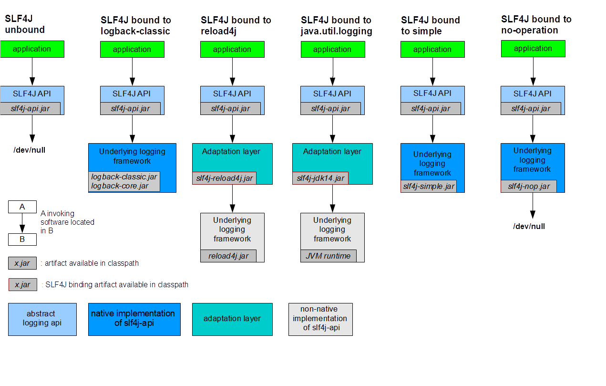
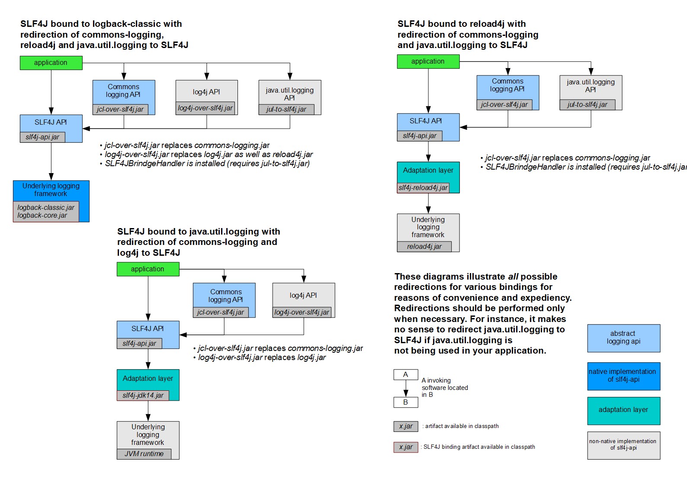

日志门面
JCL（Jakarta Commons Logging）、Slf4j（ Simple Logging Facade for Java）
日志实现
JUL（Java util logging）、Logback、Log4j、Log4j2
发展历史
（java util logging）
java原生的日志框架，使用时不需要另外引用第三方类库，相对其他日志框架使用方便，能够在小型应用中灵活使用。
Logger: 日志记录器，用来记录日志的主入口LogRecord: 日志信息存储对象Handler: 日志处理器，接收 LogRecord 并将其输出到目标，如控制台、文件、Socket 等Formatter: 格式化器，将 LogRecord 格式化为字符串，交由 Handler 输出
System.getProperty("java.util.logging.config.class")System.getProperty("java.util.logging.config.file")System.getProperty("java.home") + "\lib\logging.properties"
1#2# 根Logger配置3#4handlers=java.util.logging.ConsoleHandler,java.util.logging.FileHandler5.level=ALL6#7# 自定义Logger8#9com.shimmer.handlers= java.util.logging.ConsoleHandler,java.util.logging.FileHandler10com.shimmer.level= ALL11com.shimmer.useParentHandlers=false12#13# FileHandler 配置信息14#15# 日志目录需要手动创建16java.util.logging.FileHandler.pattern=./logs/juc%u.log17# 单个日志文件的最大字节18java.util.logging.FileHandler.limit=102419# 日志文件的滚动个数。最新的日志在log0里面，log0满了之后，log0文件名变成log1，然后新建log0文件20java.util.logging.FileHandler.count=221java.util.logging.FileHandler.append=true22java.util.logging.FileHandler.level=WARNING23#java.util.logging.FileHandler.filter=xxx24java.util.logging.FileHandler.formatter=java.util.logging.SimpleFormatter25java.util.logging.FileHandler.encoding=UTF-826#27# ConsoleHandler 配置信息28#29java.util.logging.ConsoleHandler.level=INFO30#java.util.logging.ConsoleHandler.filter=xxx31java.util.logging.ConsoleHandler.formatter=java.util.logging.SimpleFormatter32java.util.logging.ConsoleHandler.encoding=UTF-8
x
1 public void readConfiguration() throws IOException, SecurityException {2 checkPermission();3
4 // NOTE: 第一次获取配置信息5 String cname = System.getProperty("java.util.logging.config.class");6 if (cname != null) {7 // ....8 // 加载 cname 配置信息9 // ....10 }11
12 // NOTE: 第二次获取配置信息13 String fname = System.getProperty("java.util.logging.config.file");14 if (fname == null) {15 // NOTE: 第三次获取配置信息，实际位置是：${java.home}\lib\logging.properties16 fname = System.getProperty("java.home");17 if (fname == null) {18 throw new Error("Can't find java.home ??");19 }20 File f = new File(fname, "lib");21 f = new File(f, "logging.properties");22 fname = f.getCanonicalPath();23 }24 try (final InputStream in = new FileInputStream(fname)) {25 final BufferedInputStream bin = new BufferedInputStream(in);26 readConfiguration(bin);27 }28 }
ConsoleHandler的配置项有：level，filter，formatter，encoding
xxxxxxxxxx181 private void configure() {2 LogManager manager = LogManager.getLogManager();3 String cname = getClass().getName();4
5 setLevel(manager.getLevelProperty(cname +".level", Level.INFO));6 setFilter(manager.getFilterProperty(cname +".filter", null));7 setFormatter(manager.getFormatterProperty(cname +".formatter", new SimpleFormatter()));8 try {9 setEncoding(manager.getStringProperty(cname +".encoding", null));10 } catch (Exception ex) {11 try {12 setEncoding(null);13 } catch (Exception ex2) {14 // doing a setEncoding with null should always work.15 // assert false;16 }17 }18 }
FileHandler的配置项有：pattern，limit，count，append，level，filter，formatter，encoding
xxxxxxxxxx291 private void configure() {2 LogManager manager = LogManager.getLogManager();3
4 String cname = getClass().getName();5
6 pattern = manager.getStringProperty(cname + ".pattern", "%h/java%u.log");7 limit = manager.getIntProperty(cname + ".limit", 0);8 if (limit < 0) {9 limit = 0;10 }11 count = manager.getIntProperty(cname + ".count", 1);12 if (count <= 0) {13 count = 1;14 }15 append = manager.getBooleanProperty(cname + ".append", false);16 setLevel(manager.getLevelProperty(cname + ".level", Level.ALL));17 setFilter(manager.getFilterProperty(cname + ".filter", null));18 setFormatter(manager.getFormatterProperty(cname + ".formatter", new XMLFormatter()));19 try {20 setEncoding(manager.getStringProperty(cname +".encoding", null));21 } catch (Exception ex) {22 try {23 setEncoding(null);24 } catch (Exception ex2) {25 // doing a setEncoding with null should always work.26 // assert false;27 }28 }29 }
xxxxxxxxxx161 2 public void testProperties() throws Exception {3
4 InputStream in = JulTest.class.getClassLoader().getResourceAsStream("jul.properties");5 LogManager logManager = LogManager.getLogManager();6 logManager.readConfiguration(in);7
8 Logger log = Logger.getLogger("com.shimmer.log.JulTest");9 log.severe("severe message");10 log.warning("warning message");11 log.info("info message");12 log.config("config message");13 log.fine("fine message");14 log.finer("finer message");15 log.finest("finest message");16 }
Logger: 日志记录器，用来记录日志的主入口Appender/Category: 日志处理器，接收日志信息并将其输出到目标，如控制台、文件、数据库等Layout: 格式化器，将日志信息格式化为字符串，交由 Appender输出依赖导入
xxxxxxxxxx51 <dependency>2 <groupId>log4j</groupId>3 <artifactId>log4j</artifactId>4 <version>1.2.17</version>5 </dependency>
log4j.xmllog4j.propertiesxxxxxxxxxx201// 常量定义2/**3 * @deprecated This variable is for internal use only. It will4 * become package protected in future versions.5 * */6 static public final String DEFAULT_CONFIGURATION_FILE = "log4j.properties";7 8 static final String DEFAULT_XML_CONFIGURATION_FILE = "log4j.xml"; 9
10
11// 加载代码12 // if the user has not specified the log4j.configuration13 // property, we search first for the file "log4j.xml" and then14 // "log4j.properties"15 if(configurationOptionStr == null) { 16 url = Loader.getResource(DEFAULT_XML_CONFIGURATION_FILE);17 if(url == null) {18 url = Loader.getResource(DEFAULT_CONFIGURATION_FILE);19 }20 }
xxxxxxxxxx951# 加载配置时先清空现有配置2log4j.reset=true3log4j.debug=true4# 指定根Logger日志的输出级别与输出端(Level,Appender...)5log4j.rootLogger=ALL,PatternJDBCAppender6#7# 自定义Logger8#9log4j.logger.org.apache=TRACE10#11# SimpleConsoleAppender12#13log4j.appender.SimpleConsoleAppender=org.apache.log4j.ConsoleAppender14log4j.appender.SimpleConsoleAppender.layout=org.apache.log4j.SimpleLayout15# 设置日志输出的目标, System.out(默认)或者System.err16log4j.appender.SimpleConsoleAppender.target=System.out17log4j.appender.SimpleConsoleAppender.threshold=INFO18log4j.appender.SimpleConsoleAppender.encoding=UTF-819#20# XmlConsoleAppender21#22log4j.appender.XmlConsoleAppender=org.apache.log4j.ConsoleAppender23log4j.appender.XmlConsoleAppender.layout=org.apache.log4j.xml.XMLLayout24# 输出日志调用位置的信息，如：25# <log4j:locationInfo class="Log4jTest" method="testQuick" file="Log4jTest.java" line="19"/>26log4j.appender.XmlConsoleAppender.layout.locationInfo=true27# 输出上下文属性信息，可通过org.apache.log4j.MDC.put(String key, Object o)添加信息，如：28# <log4j:data name="username" value="mary"/>29log4j.appender.XmlConsoleAppender.layout.properties=true30#31# SimpleFileAppender32#33log4j.appender.SimpleFileAppender=org.apache.log4j.FileAppender34log4j.appender.SimpleFileAppender.layout=org.apache.log4j.SimpleLayout35log4j.appender.SimpleFileAppender.file=./logs/app.log36log4j.appender.SimpleFileAppender.append=true37log4j.appender.SimpleFileAppender.threshold=ALL38log4j.appender.SimpleFileAppender.encoding=UTF-839#40# HTMLDailyRollingFileAppender41#42log4j.appender.HTMLDailyRollingFileAppender=org.apache.log4j.DailyRollingFileAppender43# ./logs/app.html.2025-07-13-17-10.html44log4j.appender.HTMLDailyRollingFileAppender.datePattern='.'yyyy-MM-dd-HH-mm'.html'45log4j.appender.HTMLDailyRollingFileAppender.file=./logs/app.html46log4j.appender.HTMLDailyRollingFileAppender.append=true47log4j.appender.HTMLDailyRollingFileAppender.threshold=ALL48log4j.appender.HTMLDailyRollingFileAppender.encoding=GBK49log4j.appender.HTMLDailyRollingFileAppender.layout=org.apache.log4j.HTMLLayout50log4j.appender.HTMLDailyRollingFileAppender.layout.locationInfo=true51log4j.appender.HTMLDailyRollingFileAppender.layout.title=App Log52#53# PatternRollingFileAppender54#55log4j.appender.PatternRollingFileAppender=org.apache.log4j.RollingFileAppender56# 单个日志文件最大大小, 支持 KB/MB/GB57log4j.appender.PatternRollingFileAppender.maxFileSize=100KB58# 备份文件的最大数量59log4j.appender.PatternRollingFileAppender.maxBackupIndex=360log4j.appender.PatternRollingFileAppender.file=./logs/app.log61log4j.appender.PatternRollingFileAppender.append=true62log4j.appender.PatternRollingFileAppender.threshold=ALL63log4j.appender.PatternRollingFileAppender.encoding=UTF-864log4j.appender.PatternRollingFileAppender.layout=org.apache.log4j.PatternLayout65log4j.appender.PatternRollingFileAppender.layout.conversionPattern=%-d{yyyy-MM-dd HH:mm:ss} [%t:%r] -[%p] %m%n66#67# PatternJDBCAppender68#69log4j.appender.PatternJDBCAppender=org.apache.log4j.jdbc.JDBCAppender70log4j.appender.PatternJDBCAppender.driver=com.mysql.jdbc.Driver71log4j.appender.PatternJDBCAppender.URL=jdbc:mysql://0.0.0.0:9/learn_log72log4j.appender.PatternJDBCAppender.user=xxx73log4j.appender.PatternJDBCAppender.password=xxx74log4j.appender.PatternJDBCAppender.sql=INSERT INTO log(project_name,create_date,level,category,file_name,thread_name,line,all_category,message) values('learn_log','%d{yyyy-MM-ddHH:mm:ss}','%p','%c','%F','%t','%L','%l','%m')75# 批量写入, 没发现有啥提升76#log4j.appender.PatternJDBCAppender.bufferSize=10077log4j.appender.PatternJDBCAppender.threshold=ALL78log4j.appender.PatternJDBCAppender.layout=org.apache.log4j.PatternLayout79# ===== log4j 采用类似 C 语言的 printf 函数的打印格式格式化日志信息，具体的占位符及其含义如下：80# %d 输出服务器当前时间，默认为 ISO8601，也可以指定格式，如：%d{yyyy-MM-dd HH:mm:ss}81# %m 输出代码中指定的日志信息82# %p 输出优先级，及 DEBUG、INFO 等83# %t 输出产生该日志的线程全名84# %n 换行符（Windows平台的换行符为 "\n"，Unix 平台为 "\n"）85# %r 输出自应用启动到输出该 log 信息耗费的毫秒数86# %l 输出日志时间发生的位置，包括类名、线程、及在代码中的行数。如：Log4jTest.testQuick(Log4jTest.java:23)87# %c 输出打印语句所属的类的全名。如：Log4jTest88# %F 输出日志消息产生时所在的文件名称。如：Log4jTest.java89# %L 输出代码中的行号90# %% 输出一个 "%" 字符91# ===== 可以在 % 与字符之间加上修饰符来控制最小宽度、最大宽度和文本的对其方式。如：92# %5c 输出category名称，最小宽度是5，category<5，默认的情况下右对齐93# %-5c 输出category名称，最小宽度是5，category<5，"-"号指定左对齐,会有空格94# %.5c 输出category名称，最大宽度是5，category>5，就会将左边多出的字符截掉，<5不会有空格95# %20.30c category名称<20补空格，并且右对齐，>30字符，就从左边交远销出的字符截掉
xxxxxxxxxx61log4j.appender.SimpleConsoleAppender=org.apache.log4j.ConsoleAppender2# 设置日志输出的目标, System.out(默认)或者System.err3log4j.appender.SimpleConsoleAppender.target=System.out4log4j.appender.SimpleConsoleAppender.threshold=INFO5log4j.appender.SimpleConsoleAppender.encoding=UTF-86log4j.appender.SimpleConsoleAppender.layout=org.apache.log4j.SimpleLayout
xxxxxxxxxx61log4j.appender.SimpleFileAppender=org.apache.log4j.FileAppender2log4j.appender.SimpleFileAppender.file=./logs/app.log3log4j.appender.SimpleFileAppender.append=true4log4j.appender.SimpleFileAppender.threshold=ALL5log4j.appender.SimpleFileAppender.encoding=UTF-86log4j.appender.SimpleFileAppender.layout=org.apache.log4j.SimpleLayout
xxxxxxxxxx81log4j.appender.HTMLDailyRollingFileAppender=org.apache.log4j.DailyRollingFileAppender2# ./logs/app.html.2025-07-13-17-10.html3log4j.appender.HTMLDailyRollingFileAppender.datePattern='.'yyyy-MM-dd-HH-mm'.html'4log4j.appender.HTMLDailyRollingFileAppender.file=./logs/app.html5log4j.appender.HTMLDailyRollingFileAppender.append=true6log4j.appender.HTMLDailyRollingFileAppender.threshold=ALL7log4j.appender.HTMLDailyRollingFileAppender.encoding=GBK8log4j.appender.HTMLDailyRollingFileAppender.layout=org.apache.log4j.HTMLLayout
xxxxxxxxxx101log4j.appender.PatternRollingFileAppender=org.apache.log4j.RollingFileAppender2# 单个日志文件最大大小, 支持 KB/MB/GB3log4j.appender.PatternRollingFileAppender.maxFileSize=100KB4# 备份文件的最大数量5log4j.appender.PatternRollingFileAppender.maxBackupIndex=36log4j.appender.PatternRollingFileAppender.file=./logs/app.log7log4j.appender.PatternRollingFileAppender.append=true8log4j.appender.PatternRollingFileAppender.threshold=ALL9log4j.appender.PatternRollingFileAppender.encoding=UTF-810log4j.appender.PatternRollingFileAppender.layout=org.apache.log4j.PatternLayout
xxxxxxxxxx61log4j.appender.PatternJDBCAppender=org.apache.log4j.jdbc.JDBCAppender2log4j.appender.PatternJDBCAppender.driver=com.mysql.jdbc.Driver3log4j.appender.PatternJDBCAppender.URL=jdbc:mysql://0.0.0.0:9/learn_log4log4j.appender.PatternJDBCAppender.user=xxx5log4j.appender.PatternJDBCAppender.password=xxx6log4j.appender.PatternJDBCAppender.sql=INSERT INTO log(project_name,create_date,level,category,file_name,thread_name,line,all_category,message) values('learn_log','%d{yyyy-MM-ddHH:mm:ss}','%p','%c','%F','%t','%L','%l','%m')
xxxxxxxxxx11log4j.appender.SimpleConsoleAppender.layout=org.apache.log4j.SimpleLayout
xxxxxxxxxx71log4j.appender.XmlConsoleAppender.layout=org.apache.log4j.xml.XMLLayout2# 输出日志调用位置的信息，如：3# <log4j:locationInfo class="Log4jTest" method="testQuick" file="Log4jTest.java" line="19"/>4log4j.appender.XmlConsoleAppender.layout.locationInfo=true5# 输出上下文属性信息，可通过org.apache.log4j.MDC.put(String key, Object o)添加信息，如：6# <log4j:data name="username" value="mary"/>7log4j.appender.XmlConsoleAppender.layout.properties=true
xxxxxxxxxx31log4j.appender.HTMLDailyRollingFileAppender.layout=org.apache.log4j.HTMLLayout2log4j.appender.HTMLDailyRollingFileAppender.layout.locationInfo=true3log4j.appender.HTMLDailyRollingFileAppender.layout.title=App Log
xxxxxxxxxx21log4j.appender.PatternRollingFileAppender.layout=org.apache.log4j.PatternLayout2log4j.appender.PatternRollingFileAppender.layout.conversionPattern=%-d{yyyy-MM-dd HH:mm:ss} [%t:%r] -[%p] %m%n
（Jakarta Commons Logging），Apache提供的一个通用日志API
JCL 有两个基本的抽象类：Log(基本记录器)和LogFactory(负责创建Log实例)。
org.apache.commons.logging.logorg.apache.commons.logging.Logorg.apache.commons.logging.impl.Log4JLoggerorg.apache.commons.logging.impl.Jdk14Loggerx
1 static {2
3 // Is Log4J Available?4 try {5 log4jIsAvailable = null != Class.forName("org.apache.log4j.Logger");6 } catch (Throwable t) {7 log4jIsAvailable = false;8 }9
10 // Is JDK 1.4 Logging Available?11 try {12 jdk14IsAvailable = null != Class.forName("java.util.logging.Logger") &&13 null != Class.forName("org.apache.commons.logging.impl.Jdk14Logger");14 } catch (Throwable t) {15 jdk14IsAvailable = false;16 }17
18 // Set the default Log implementation19 String name = null;20 try {21 name = System.getProperty("org.apache.commons.logging.log");22 if (name == null) {23 name = System.getProperty("org.apache.commons.logging.Log");24 }25 } catch (Throwable t) {26 }27 if (name != null) {28 try {29 setLogImplementation(name);30 } catch (Throwable t) {31 try {32 setLogImplementation("org.apache.commons.logging.impl.NoOpLog");33 } catch (Throwable u) {34 // ignored35 }36 }37 } else {38 try {39 if (log4jIsAvailable) {40 setLogImplementation("org.apache.commons.logging.impl.Log4JLogger");41 } else if (jdk14IsAvailable) {42 setLogImplementation("org.apache.commons.logging.impl.Jdk14Logger");43 } else {44 setLogImplementation("org.apache.commons.logging.impl.NoOpLog");45 }46 } catch (Throwable t) {47 try {48 setLogImplementation("org.apache.commons.logging.impl.NoOpLog");49 } catch (Throwable u) {50 // ignored51 }52 }53 }54
55 }
(Simple Logging Facade For Java)
给Java日志访问提供一套标准、规范的API框架，其主要意义在于提供接口，具体的实现可以交由其他日志框架，例如log4j和logback等
依赖导入
x
1 <!-- Slf4j 门面API-->2 <dependency>3 <groupId>org.slf4j</groupId>4 <artifactId>slf4j-api</artifactId>5 <version>1.7.27</version>6 </dependency>7
8 <!-- Slf4j 日志实现-->9 <dependency>10 <groupId>org.slf4j</groupId>11 <artifactId>slf4j-simple</artifactId>12 <version>1.7.27</version>13 </dependency>示例代码
xxxxxxxxxx141public class Slf4jTest {2
3 private static final Logger logger = LoggerFactory.getLogger(Slf4jTest.class);4
5 6 public void testSimpleImpl() {7
8 logger.error("error message");9 logger.warn("error message");10 logger.info("error message");11 logger.debug("error message");12 logger.trace("error message");13 }14}

xxxxxxxxxx111 <dependency>2 <groupId>org.slf4j</groupId>3 <artifactId>slf4j-api</artifactId>4 <version>1.7.27</version>5 </dependency>6
7 <dependency>8 <groupId>ch.qos.logback</groupId>9 <artifactId>logback-classic</artifactId>10 <version>1.2.12</version>11 </dependency>
xxxxxxxxxx111 <dependency>2 <groupId>org.slf4j</groupId>3 <artifactId>slf4j-api</artifactId>4 <version>1.7.27</version>5 </dependency>6
7 <dependency>8 <groupId>org.slf4j</groupId>9 <artifactId>slf4j-simple</artifactId>10 <version>1.7.27</version>11 </dependency>
xxxxxxxxxx171 <dependency>2 <groupId>org.slf4j</groupId>3 <artifactId>slf4j-api</artifactId>4 <version>1.7.27</version>5 </dependency>6
7 <dependency>8 <groupId>org.slf4j</groupId>9 <artifactId>slf4j-reload4j</artifactId>10 <version>1.7.36</version>11 </dependency>12
13 <dependency>14 <groupId>log4j</groupId>15 <artifactId>log4j</artifactId>16 <version>1.2.17</version>17 </dependency>
xxxxxxxxxx111 <dependency>2 <groupId>org.slf4j</groupId>3 <artifactId>slf4j-api</artifactId>4 <version>1.7.27</version>5 </dependency>6
7 <dependency>8 <groupId>org.slf4j</groupId>9 <artifactId>slf4j-jdk14</artifactId>10 <version>1.5.6</version>11 </dependency>
类加载顺序，只会加载一个。可以通过调整依赖顺序，从而调整绑定的具体日志实现StaticLoggerBinder.class 来查找项目中的具体日志实现x
1 // We need to use the name of the StaticLoggerBinder class, but we can't2 // reference3 // the class itself.4 private static String STATIC_LOGGER_BINDER_PATH = "org/slf4j/impl/StaticLoggerBinder.class";5
6 static Set<URL> findPossibleStaticLoggerBinderPathSet() {7 // use Set instead of list in order to deal with bug #1388 // LinkedHashSet appropriate here because it preserves insertion order9 // during iteration10 Set<URL> staticLoggerBinderPathSet = new LinkedHashSet<URL>();11 try {12 ClassLoader loggerFactoryClassLoader = LoggerFactory.class.getClassLoader();13 Enumeration<URL> paths;14 if (loggerFactoryClassLoader == null) {15 paths = ClassLoader.getSystemResources(STATIC_LOGGER_BINDER_PATH);16 } else {17 paths = loggerFactoryClassLoader.getResources(STATIC_LOGGER_BINDER_PATH);18 }19 while (paths.hasMoreElements()) {20 URL path = paths.nextElement();21 staticLoggerBinderPathSet.add(path);22 }23 } catch (IOException ioe) {24 Util.report("Error getting resources from path", ioe);25 }26 return staticLoggerBinderPathSet;27 }
！！！注意：适配器和桥接器不能一起使用，否则导致依赖循环

xxxxxxxxxx251 <!-- 1.移除原来日志实现 -->2<!-- <dependency>-->3<!-- <groupId>log4j</groupId>-->4<!-- <artifactId>log4j</artifactId>-->5<!-- <version>1.2.17</version>-->6<!-- </dependency>-->7
8 <!-- 2.添加对应日志实现的桥接器 -->9 <dependency>10 <groupId>org.slf4j</groupId>11 <artifactId>log4j-over-slf4j</artifactId>12 <version>1.7.27</version>13 </dependency>14
15 <!-- 3.添加Slf4j和具体日志实现 -->16 <dependency>17 <groupId>org.slf4j</groupId>18 <artifactId>slf4j-api</artifactId>19 <version>1.7.27</version>20 </dependency>21 <dependency>22 <groupId>ch.qos.logback</groupId>23 <artifactId>logback-classic</artifactId>24 <version>1.2.12</version>25 </dependency>
Logback是由log4j创始人设计的另一个开源日志组件，性能比log4j要好
主要模块
xxxxxxxxxx51 <dependency>2 <groupId>ch.qos.logback</groupId>3 <artifactId>logback-classic</artifactId>4 <version>1.2.12</version>5 </dependency>
ch.qos.logback.classic.util.ContextInitializer#findURLOfDefaultConfigurationFile(boolean updateStatus)
xxxxxxxxxx1361 2<configuration>3
4 <!--5 %d{yyyy-MM-dd HH:mm:ss.SSS} 时间6 %thread 线程名称7 %-5level 级别从左显示5个字符宽度8 %c 类名，simpleName9 %M 方法名10 %L 行号11 %m / %msg 信息12 %n 换行13 -->14<!-- <property name="pattern" value="%d{yyyy-MM-dd HH:mm:ss.SSS} [%thread] %-5level %c %M %L %m%n"/>-->15 <property name="pattern" value="%d{yyyy-MM-dd HH:mm:ss.SSS} [%thread] %highlight(%-5level) %cyan(%logger{36}) - %m%n"/>16 <property name="log_dir" value="./logs"/>17 <property name="file" value="app.log"/>18
19 <!-- ConsoleAppender -->20 <appender name="console" class="ch.qos.logback.core.ConsoleAppender">21 <!-- System.out or System.err -->22 <target>System.out</target>23 <encoder class="ch.qos.logback.classic.encoder.PatternLayoutEncoder">24 <pattern>${pattern}</pattern>25 <charset>UTF-8</charset>26 <!-- #logback.classic pattern: %d{yyyy-MM-dd HH:mm:ss.SSS} [%thread] %-5level %c %M %L %msg%n -->27 <outputPatternAsHeader>true</outputPatternAsHeader>28 </encoder>29 <!-- 彩色输出30 <dependency>31 <groupId>org.fusesource.jansi</groupId>32 <artifactId>jansi</artifactId>33 <version>2.4.0</version>34 </dependency>35 -->36<!-- <with-jansi>true</with-jansi>-->37
38 <!-- filter -->39 <!-- ThresholdFilter 阈值过滤 -->40 <filter class="ch.qos.logback.classic.filter.ThresholdFilter">41 <level>INFO</level> <!-- 仅允许 INFO 及以上通过该过滤器 -->42 </filter>43
44 <!-- LevelFilter 精确匹配日志级别 -->45 <filter class="ch.qos.logback.classic.filter.LevelFilter">46 <level>WARN</level> <!-- 允许 WARN 立即输出，其他交由下一个过滤器判断 -->47 <onMatch>ACCEPT</onMatch>48 <onMismatch>NEUTRAL</onMismatch>49 </filter>50
51 <!-- EvaluatorFilter 动态条件过滤52 JaninoEventEvaluator运行需要该依赖53 <dependency>54 <groupId>org.codehaus.janino</groupId>55 <artifactId>janino</artifactId>56 </dependency>57 -->58 <filter class="ch.qos.logback.core.filter.EvaluatorFilter">59 <!-- 允许日志信息中包含 message 立即输出 -->60 <evaluator class="ch.qos.logback.classic.boolex.JaninoEventEvaluator">61 <expression>formattedMessage.contains("message")</expression>62 </evaluator>63 <onMatch>ACCEPT</onMatch>64 <onMismatch>DENY</onMismatch>65 </filter>66
67 <!-- 每次写入刷新输出缓冲区 -->68<!-- <immediateFlush>true</immediateFlush>-->69 </appender>70
71 <!-- HtmlFileAppender -->72 <appender name="htmlFile" class="ch.qos.logback.core.FileAppender">73 <encoder class="ch.qos.logback.core.encoder.LayoutWrappingEncoder">74 <layout class="ch.qos.logback.classic.html.HTMLLayout">75 <pattern>%d{yyyy-MM-dd HH:mm:ss.SSS}%thread%-5level%c%M%L%m</pattern>76 </layout>77 <charset>GBK</charset>78 </encoder>79 <file>${log_dir}/app.html</file>80 <!-- 多程序实例安全写入同一个日志文件 -->81<!-- <prudent>true</prudent>-->82 <append>true</append>83 </appender>84
85 <!-- RollFileAppender -->86 <!-- RollFileAppender是FileAppender的子类，所以后者的配置前者都存在 -->87 <appender name="rollFile" class="ch.qos.logback.core.rolling.RollingFileAppender">88 <encoder class="ch.qos.logback.classic.encoder.PatternLayoutEncoder">89 <pattern>${pattern}</pattern>90 </encoder>91 <file>${log_dir}/roll_logback.log</file>92 <!-- 指定日志文件拆分和压缩规则 -->93 <rollingPolicy class="ch.qos.logback.core.rolling.SizeAndTimeBasedRollingPolicy">94 <!-- 通过指定压缩文件名称，来确定分割文件方式 -->95 <fileNamePattern>${log_dir}/rolling.%d{yyyy-MM-dd-hh-mm}.log%i.gz</fileNamePattern>96 <!-- 文件拆分大小 -->97 <maxFileSize>1MB</maxFileSize>98 <!-- 是否在启动时清理旧日志，单独启用不生效 if (maxHistory != UNBOUND_HISTORY) -->99 <CleanHistoryOnStart>true</CleanHistoryOnStart>100 <!-- 保留前几个周期的日志 -->101 <maxHistory>8</maxHistory>102 <!-- 最大总占用磁盘空间 -->103 <totalSizeCap>16GB</totalSizeCap>104 </rollingPolicy>105 </appender>106
107 <!-- AsyncAppender -->108 <appender name="async" class="ch.qos.logback.classic.AsyncAppender">109 <appender-ref ref="console"/>110 <!-- 队列大小。日志事件将被放入此队列再异步消费。 -->111 <queueSize>1024</queueSize>112 <!-- 丢弃阈值（队列空闲数）。当队列空闲数小于这个值时会丢弃INFO及其以下的日志 -->113 <discardingThreshold>128</discardingThreshold>114 <!-- true-非阻塞入队，会丢日志；false-阻塞入队，不会丢日志 -->115 <neverBlock>true</neverBlock>116 <!-- Appender stop之后，等待日志队列被清空所能容忍的最长时间 -->117 <maxFlushTime>2000</maxFlushTime>118 </appender>119
120 <root level="ALL">121 <appender-ref ref="console"/>122 </root>123
124 <!-- 自定义Logger125 1. name: 生效范围126 2. level: 打印级别。ALL, TRACE, DEBUG, INFO, WARN, ERROR, ALL, OFF127 3. additivity: 是否向父类logger传递打印信息。默认是true128 -->129 <logger name="java.lang" level="ALL" additivity="false">130 <appender-ref ref="rollFile"/>131 </logger>132 133 <!-- 开启调试模式 -->134 <debug>true</debug>135
136</configuration>
https://logback.qos.ch/translator/
filter 标签，位于 appender 之中
ch.qos.logback.core.filter.Filter
xxxxxxxxxx51public enum FilterReply {2 DENY, // 立即拒绝当前日志事件，不再执行后续处理3 NEUTRAL, // 当前过滤器未做出明确决策，交由后续过滤器或规则处理4 ACCEPT; // 立即接受当前日志事件，跳过后续所有过滤器。5}
xxxxxxxxxx41 <!-- ThresholdFilter 阈值过滤 -->2 <filter class="ch.qos.logback.classic.filter.ThresholdFilter">3 <level>INFO</level> <!-- 仅允许 INFO 及以上通过该过滤器 -->4 </filter>逻辑源码
xxxxxxxxxx121 2 public FilterReply decide(ILoggingEvent event) {3 if (!isStarted()) {4 return FilterReply.NEUTRAL;5 }6
7 if (event.getLevel().isGreaterOrEqual(level)) {8 return FilterReply.NEUTRAL;9 } else {10 return FilterReply.DENY;11 }12 }
xxxxxxxxxx61 <!-- 精确匹配日志级别 -->2 <filter class="ch.qos.logback.classic.filter.LevelFilter">3 <level>WARN</level> <!-- 允许 WARN 立即输出，其他交由下一个过滤器判断 -->4 <onMatch>ACCEPT</onMatch>5 <onMismatch>NEUTRAL</onMismatch>6 </filter>逻辑源码
xxxxxxxxxx121 2 public FilterReply decide(ILoggingEvent event) {3 if (!isStarted()) {4 return FilterReply.NEUTRAL;5 }6
7 if (event.getLevel().equals(level)) {8 return onMatch;9 } else {10 return onMismatch;11 }12 }
xxxxxxxxxx161
2 <!-- EvaluatorFilter 动态条件过滤3 JaninoEventEvaluator 运行需要该依赖4 <dependency>5 <groupId>org.codehaus.janino</groupId>6 <artifactId>janino</artifactId>7 </dependency>8 -->9 <filter class="ch.qos.logback.core.filter.EvaluatorFilter">10 <!-- 允许日志信息中包含 message 立即输出 -->11 <evaluator class="ch.qos.logback.classic.boolex.JaninoEventEvaluator">12 <expression>formattedMessage.contains("message")</expression>13 </evaluator>14 <onMatch>ACCEPT</onMatch>15 <onMismatch>DENY</onMismatch>16 </filter>逻辑源码
xxxxxxxxxx171 public FilterReply decide(E event) {2 // let us not throw an exception3 // see also bug #17.4 if (!isStarted() || !evaluator.isStarted()) {5 return FilterReply.NEUTRAL;6 }7 try {8 if (evaluator.evaluate(event)) {9 return onMatch;10 } else {11 return onMismatch;12 }13 } catch (EvaluationException e) {14 addError("Evaluator " + evaluator.getName() + " threw an exception", e);15 return FilterReply.NEUTRAL;16 }17 }
appender 标签，位于 configuration 之中
xxxxxxxxxx231 <!-- ConsoleAppender -->2 <appender name="console" class="ch.qos.logback.core.ConsoleAppender">3 <!-- System.out or System.err -->4 <target>System.out</target>5 <encoder class="ch.qos.logback.classic.encoder.PatternLayoutEncoder">6 <!-- 高亮pattern：%d{yyyy-MM-dd HH:mm:ss.SSS} [%thread] %highlight(%-5level) %cyan(%logger{36}) - %m%n -->7 <pattern>%d{yyyy-MM-dd HH:mm:ss.SSS} [%thread] %-5level %c %M %L %m%n</pattern>8 <charset>UTF-8</charset>9 <!-- #logback.classic pattern: %d{yyyy-MM-dd HH:mm:ss.SSS} [%thread] %-5level %c %M %L %msg%n -->10 <outputPatternAsHeader>true</outputPatternAsHeader>11 </encoder>12 <!-- 彩色输出 导入依赖即可生效，无需with-jansi配置13 <dependency>14 <groupId>org.fusesource.jansi</groupId>15 <artifactId>jansi</artifactId>16 <version>2.4.0</version>17 </dependency>18 -->19<!-- <with-jansi>true</with-jansi>-->20
21 <!-- 每次写入刷新输出缓冲区 -->22<!-- <immediateFlush>true</immediateFlush>-->23 </appender>
xxxxxxxxxx131 <!-- HtmlFileAppender -->2 <appender name="htmlFile" class="ch.qos.logback.core.FileAppender">3 <encoder class="ch.qos.logback.core.encoder.LayoutWrappingEncoder">4 <layout class="ch.qos.logback.classic.html.HTMLLayout">5 <pattern>%d{yyyy-MM-dd HH:mm:ss.SSS}%thread%-5level%c%M%L%m</pattern>6 </layout>7 <charset>GBK</charset>8 </encoder>9 <file>${log_dir}/app.html</file>10 <!-- 多程序实例安全写入同一个日志文件 -->11<!-- <prudent>true</prudent>-->12 <append>true</append>13 </appender>
RollingFileAppender 是 FileAppender 的子类，所以后者拥有的配置项，前者也会拥有
xxxxxxxxxx201 <!-- RollFileAppender -->2 <appender name="rollFile" class="ch.qos.logback.core.rolling.RollingFileAppender">3 <encoder class="ch.qos.logback.classic.encoder.PatternLayoutEncoder">4 <pattern>${pattern}</pattern>5 </encoder>6 <file>${log_dir}/roll_logback.log</file>7 <!-- 指定日志文件拆分和压缩规则 -->8 <rollingPolicy class="ch.qos.logback.core.rolling.SizeAndTimeBasedRollingPolicy">9 <!-- 通过指定压缩文件名称，来确定分割文件方式 -->10 <fileNamePattern>${log_dir}/rolling.%d{yyyy-MM-dd-hh-mm}.log%i.gz</fileNamePattern>11 <!-- 文件拆分大小 -->12 <maxFileSize>1MB</maxFileSize>13 <!-- 是否在启动时清理旧日志，单独启用不生效 if (maxHistory != UNBOUND_HISTORY) -->14 <CleanHistoryOnStart>true</CleanHistoryOnStart>15 <!-- 保留前几个周期的日志 -->16 <maxHistory>8</maxHistory>17 <!-- 最大总占用磁盘空间 -->18 <totalSizeCap>16GB</totalSizeCap>19 </rollingPolicy>20 </appender>cleanHistoryOnstart
xxxxxxxxxx211// ch.qos.logback.core.rolling.TimeBasedRollingPolicy2 public void start() {3 4 ...5
6 // 先检查maxHistory有没有设置值，再去确定cleanHistoryOnStart设置项7 if (maxHistory != UNBOUND_HISTORY) {8 archiveRemover = timeBasedFileNamingAndTriggeringPolicy.getArchiveRemover();9 archiveRemover.setMaxHistory(maxHistory);10 archiveRemover.setTotalSizeCap(totalSizeCap.getSize());11 if (cleanHistoryOnStart) {12 addInfo("Cleaning on start up");13 Date now = new Date(timeBasedFileNamingAndTriggeringPolicy.getCurrentTime());14 cleanUpFuture = archiveRemover.cleanAsynchronously(now);15 }16 } else if (!isUnboundedTotalSizeCap()) {17 addWarn("'maxHistory' is not set, ignoring 'totalSizeCap' option with value ["+totalSizeCap+"]");18 }19
20 super.start();21 }
xxxxxxxxxx121 <!-- AsyncAppender -->2 <appender name="async" class="ch.qos.logback.classic.AsyncAppender">3 <appender-ref ref="console"/>4 <!-- 队列大小。日志事件将被放入此队列再异步消费。 -->5 <queueSize>1024</queueSize>6 <!-- 丢弃阈值（队列空闲数）。当队列空闲数小于这个值时会丢弃INFO及其以下的日志 -->7 <discardingThreshold>128</discardingThreshold>8 <!-- true-非阻塞入队，会丢日志；false-阻塞入队，不会丢日志 -->9 <neverBlock>true</neverBlock>10 <!-- Appender stop之后，等待日志队列被清空所能容忍的最长时间 -->11 <maxFlushTime>2000</maxFlushTime>12 </appender>queueSize and discardingThreshold
x
1// ch.qos.logback.core.AsyncAppenderBase2
3 4 public void start() {5 if (isStarted())6 return;7 if (appenderCount == 0) {8 addError("No attached appenders found.");9 return;10 }11 if (queueSize < 1) {12 addError("Invalid queue size [" + queueSize + "]");13 return;14 }15 // 根据queueSize设置，初始化队列容量16 blockingQueue = new ArrayBlockingQueue<E>(queueSize);17 // discardingThreshold若没有设置，则自行计算18 if (discardingThreshold == UNDEFINED)19 discardingThreshold = queueSize / 5;20 addInfo("Setting discardingThreshold to " + discardingThreshold);21 worker.setDaemon(true);22 worker.setName("AsyncAppender-Worker-" + getName());23 // make sure this instance is marked as "started" before staring the worker Thread24 super.start();25 worker.start();26 }27
28 29 protected void append(E eventObject) {30 // append日志时，若队列空闲值小于discardingThreshold设定值，则考虑丢弃 INFO 及其以下的日志31 if (isQueueBelowDiscardingThreshold() && isDiscardable(eventObject)) {32 return;33 }34 preprocess(eventObject);35 put(eventObject);36 }37
38 private boolean isQueueBelowDiscardingThreshold() {39 return (blockingQueue.remainingCapacity() < discardingThreshold);40 }41
42// ch.qos.logback.core.AsyncAppender43 protected boolean isDiscardable(ILoggingEvent event) {44 Level level = event.getLevel();45 return level.toInt() <= Level.INFO_INT;46 }neverBlock
xxxxxxxxxx281// ch.qos.logback.core.AsyncAppenderBase 2 private void put(E eventObject) {3 if (neverBlock) {4 // 非阻塞put，可能失败5 blockingQueue.offer(eventObject);6 } else {7 // 阻塞put，一定成功8 putUninterruptibly(eventObject);9 }10 }11
12 private void putUninterruptibly(E eventObject) {13 boolean interrupted = false;14 try {15 while (true) {16 try {17 blockingQueue.put(eventObject);18 break;19 } catch (InterruptedException e) {20 interrupted = true;21 }22 }23 } finally {24 if (interrupted) {25 Thread.currentThread().interrupt();26 }27 }28 }
xxxxxxxxxx101 <!--2 %d{yyyy-MM-dd HH:mm:ss.SSS} 时间3 %thread 线程名称4 %-5level 级别从左显示5个字符宽度5 %c 类名，simpleName6 %M 方法名7 %L 行号8 %m / %msg 信息9 %n 换行10 -->
xxxxxxxxxx71 <encoder class="ch.qos.logback.classic.encoder.PatternLayoutEncoder">2 <!-- 高亮pattern：%d{yyyy-MM-dd HH:mm:ss.SSS} [%thread] %highlight(%-5level) %cyan(%logger{36}) - %m%n -->3 <pattern>%d{yyyy-MM-dd HH:mm:ss.SSS} [%thread] %-5level %c %M %L %m%n</pattern>4 <charset>UTF-8</charset>5 <!-- #logback.classic pattern: %d{yyyy-MM-dd HH:mm:ss.SSS} [%thread] %-5level %c %M %L %msg%n -->6 <outputPatternAsHeader>true</outputPatternAsHeader>7 </encoder>
xxxxxxxxxx71 <encoder class="ch.qos.logback.core.encoder.LayoutWrappingEncoder">2 <layout class="ch.qos.logback.classic.html.HTMLLayout">3 <pattern>%d{yyyy-MM-dd HH:mm:ss.SSS}%thread%-5level%c%M%L%m</pattern>4 </layout>5 <!-- 浏览器访问设置GBK编码 -->6 <charset>GBK</charset>7 </encoder>
特点
依赖导入
x
1 <!-- Log4j2 门面API-->2 <dependency>3 <groupId>org.apache.logging.log4j</groupId>4 <artifactId>log4j-api</artifactId>5 <version>2.11.1</version>6 </dependency>7 <!-- Log4j2 日志实现 -->8 <dependency>9 <groupId>org.apache.logging.log4j</groupId>10 <artifactId>log4j-core</artifactId>11 <version>2.11.1</version>12 </dependency>
注意：文件相关的Appender，不同Appender之间，不可以指向同一个文件
xxxxxxxxxx571 2<!--3status：Log4j2内部日志设置4monitorInterval：热更新间隔，秒5 -->6<Configuration status="WARN" monitorInterval="5">7
8 <properties>9 <property name="LOG_HOME">./logs</property>10 </properties>11
12 <Appenders>13 <!-- ConsoleAppender -->14 <Console name="CONSOLE" target="SYSTEM_OUT">15 <PatternLayout pattern="%d{HH:mm:ss.SSS} [%t] [%-5level] %c{36}:%L CONSOLE %m%n"/>16 </Console>17 <!-- FileAppender -->18 <File name="FILE" fileName="${LOG_HOME}/app.log">19 <PatternLayout pattern="[%d{yyyy-MM-dd HH:mm:ss.SSS}] [%-5level] %l%c{36} - %m%n"/>20 </File>21 <!-- RandomAppender -->22 <!-- 高并发场景使用，开启缓冲区，锁的粒度更细 -->23 <RandomAccessFile name="RANDOM" fileName="${LOG_HOME}/app-random.log">24 <PatternLayout pattern="[%d{yyyy-MM-dd HH:mm:ss.SSS}] [%-5level] %l%c{36} - %m%n"/>25 </RandomAccessFile>26 <!-- RollingAppender -->27 <RollingFile name="ROLLING" fileName="${LOG_HOME}/app-rolling.log"28 filePattern="${LOG_HOME}/$${date:yyyy-MM-dd}/app-%d{yyyy-MM-dd-HH-mm}-%i.log">29 <ThresholdFilter level="debug" onMatch="ACCEPT" onMismatch="DENY"/>30 <PatternLayout pattern="[%d{yyyy-MM-dd HH:mm:ss.SSS}] [%-5level] %l%c{36} - %msg%n"/>31 <Policies>32 <!-- 启动应用时强制滚动一次日志 -->33 <OnStartupTriggeringPolicy/>34 <!-- 单个日志文件超过 10MB 时触发滚动 -->35 <SizeBasedTriggeringPolicy size="10MB"/>36 <TimeBasedTriggeringPolicy interval="1"/>37 </Policies>38 <!-- 最多保留滚动日志文件数 -->39 <DefaultRolloverStrategy max="30"/>40 </RollingFile>41 </Appenders>42
43
44 <Loggers>45 <Root level="trace">46 <AppenderRef ref="CONSOLE"/>47 <AppenderRef ref="FILE"/>48 <AppenderRef ref="RANDOM"/>49 <AppenderRef ref="ROLLING"/>50 </Root>51
52 <Logger name="com.shimmer" level="info" additivity="false" includeLocation="false">53 <AppenderRef ref="CONSOLE"/>54 </Logger>55 </Loggers>56
57</Configuration>
注意：三种异步日志，不要混合使用，否则性能会降到最低的 AsyncAppender
性能：全局异步 > 异步Logger > 异步Appender
xxxxxxxxxx61 <!--异步日志依赖-->2 <dependency>3 <groupId>com.lmax</groupId>4 <artifactId>disruptor</artifactId>5 <version>3.3.4</version>6 </dependency>
添加 log4j2.component.properties 文件
xxxxxxxxxx11Log4jContextSelector=org.apache.logging.log4j.core.async.AsyncLoggerContextSelector
xxxxxxxxxx51 <Loggers>2 <AsyncLogger name="com.shimmer" level="INFO" includeLocation="false" additivity="false">3 <AppenderRef ref="file"/>4 </AsyncLogger>5 </Loggers>
xxxxxxxxxx91 <Appenders>2 <File name="FILE" fileName="${LOG_HOME}/app.log">3 <PatternLayout pattern="[%d{yyyy-MM-dd HH:mm:ss.SSS}] [%-5level] %l%c{36} - %m%n"/>4 </File>5
6 <Async name="ASYNC">7 <AppenderRef ref="FILE"/>8 </Async>9 </Appenders>
{kind=link}
{kind=link}